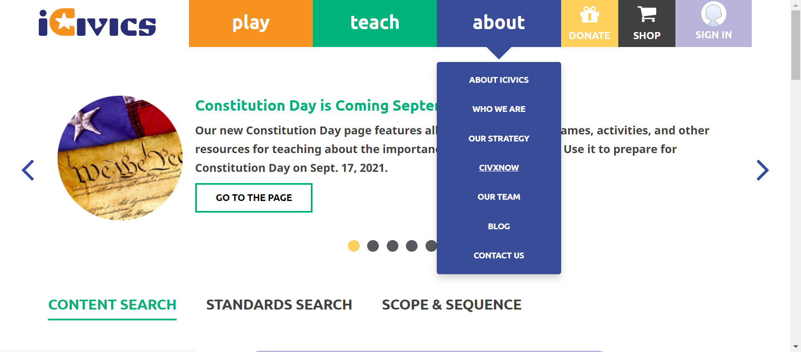
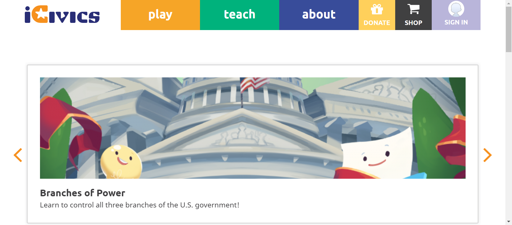
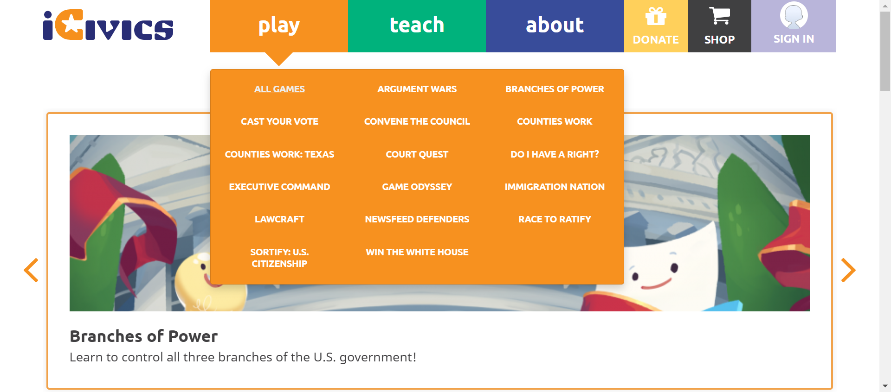
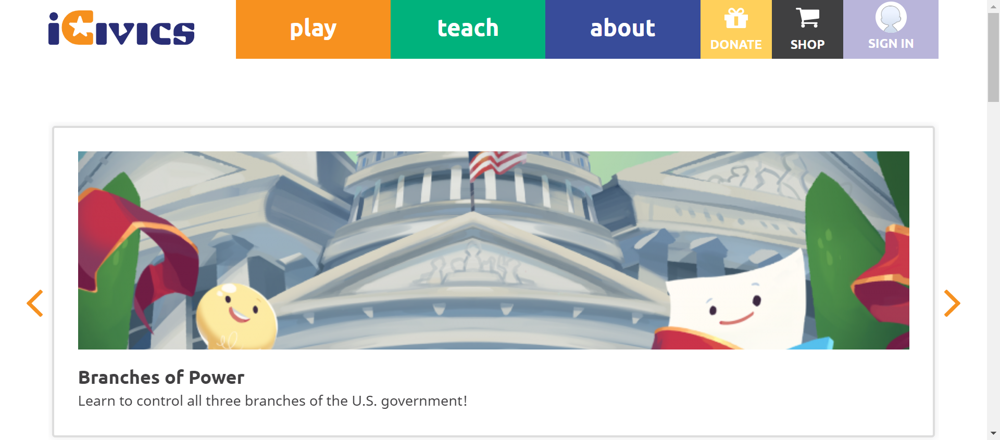
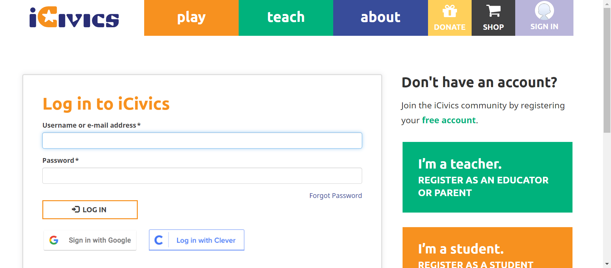
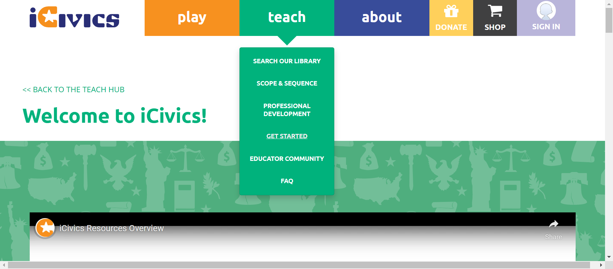
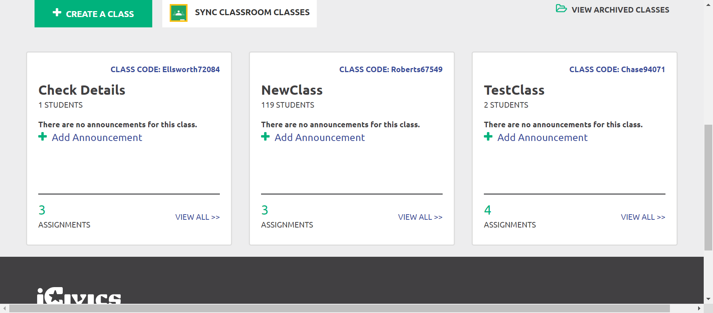
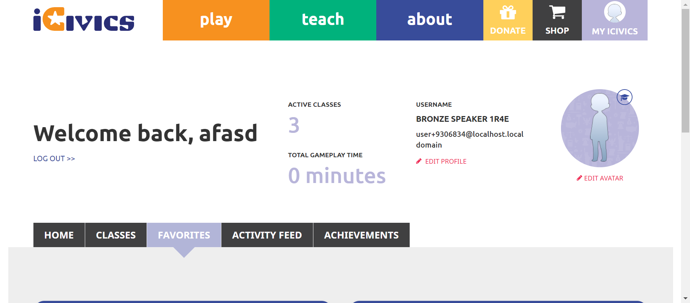
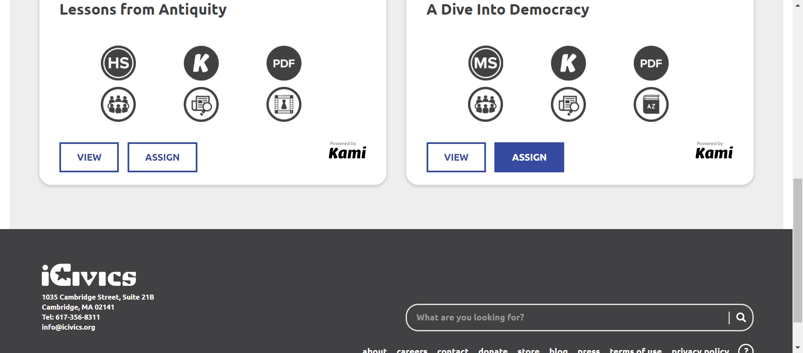
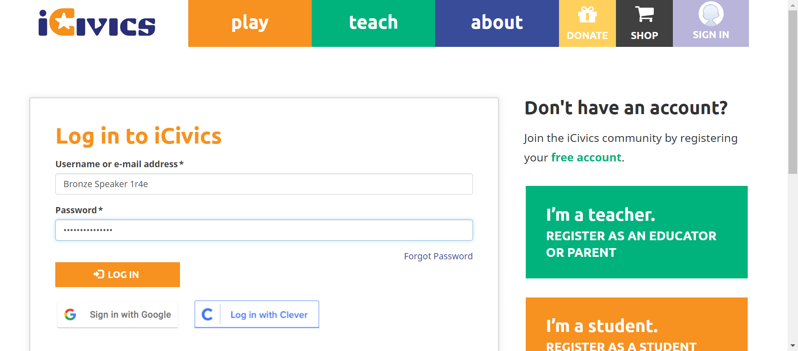

Tests
36 test(s) passed
0 test(s) failed, 0 others
Steps
374 step(s) passed
0 step(s) failed, 0 others
Tests
-
HomepageHeaderplay Jun 14, 2022 03:09:15 PM passJun 14, 2022 03:09:15 PM Jun 14, 2022 03:16:23 PM 0h 7m 8s+0ms
-
C22 - When you select About, does a submenu open below the About button?
Jun 14, 2022 10:08:07 PM 0h 25m 53s+997ms passStatus Timestamp Details check_circle 3:09:48 PM The Element about clicked 
check_circle 3:09:49 PM Aboutsubmenu display successfully 
check_circle 3:10:14 PM The Element clicked 
-
C23 - Do you see links to About iCivics, Who We Are, Our Strategy, CIVXNOW, Our Team, Blog, and Contact Us in the submenu?
Jun 14, 2022 10:08:08 PM 0h 25m 54s+4ms passStatus Timestamp Details check_circle 3:10:26 PM The Element about clicked 
check_circle 3:10:26 PM Aboutsubmenu display successfully -
C24 - When you select a link in the submenu, are you navigated to the appropriate page?
Jun 14, 2022 10:08:08 PM 0h 25m 54s+6ms passStatus Timestamp Details check_circle 3:10:57 PM The mouse over by xpath : (//a[@href='/about'])[3] is performed. 
check_circle 3:10:57 PM The element [[ChromeDriver: chrome on WINDOWS (9227502019c4ae8ba70c4bd4ffc7b83c)] -> xpath: (//li[@class='first about icivics']/a)[2]] is visible 
check_circle 3:10:57 PM The expected text contains the actual ABOUT ICIVICS 
check_circle 3:11:18 PM The Element ABOUT ICIVICS clicked 
check_circle 3:11:18 PM The expected https://staging.d9.icivics.org/about url as same as the https://staging.d9.icivics.org/about actual url. 
check_circle 3:11:18 PM The expected text contains the actual iCivics reimagines civic education for American democracy 
check_circle 3:11:19 PM The mouse over by xpath : (//a[@href='/about'])[3] is performed. 
check_circle 3:11:19 PM The element [[ChromeDriver: chrome on WINDOWS (9227502019c4ae8ba70c4bd4ffc7b83c)] -> xpath: (//li[contains(@class,'who we')]//a)[2]] is visible 
check_circle 3:11:19 PM The expected text contains the actual WHO WE ARE 
check_circle 3:11:51 PM The Element WHO WE ARE clicked 
check_circle 3:11:51 PM The expected https://staging.icivics.org/who-we-are url as same as the https://staging.icivics.org/who-we-are actual url. 
check_circle 3:11:56 PM The mouse over by xpath : (//a[@href='/about'])[3] is performed. 
check_circle 3:11:57 PM The element [[ChromeDriver: chrome on WINDOWS (9227502019c4ae8ba70c4bd4ffc7b83c)] -> xpath: (//li[@class='our strategy']//a)[2]] is visible 
check_circle 3:11:57 PM The expected text contains the actual OUR STRATEGY 
check_circle 3:12:18 PM The Element OUR STRATEGY clicked 
check_circle 3:12:18 PM The expected https://staging.icivics.org/our-strategy url as same as the https://staging.icivics.org/our-strategy actual url. 
check_circle 3:12:21 PM The mouse over by xpath : (//a[@href='/about'])[3] is performed. 
check_circle 3:12:21 PM The element [[ChromeDriver: chrome on WINDOWS (9227502019c4ae8ba70c4bd4ffc7b83c)] -> xpath: (//li[@class='civxnow']//a)[2]] is visible 
check_circle 3:12:22 PM The expected text contains the actual CIVXNOW 
check_circle 3:12:22 PM The Element CIVXNOW clicked 
check_circle 3:12:40 PM The expected https://civxnow.org/ url as same as the https://civxnow.org/ actual url. 
check_circle 3:12:43 PM The mouse over by xpath : (//a[@href='/about'])[3] is performed. 
check_circle 3:12:44 PM The element [[ChromeDriver: chrome on WINDOWS (9227502019c4ae8ba70c4bd4ffc7b83c)] -> xpath: (//a[@href='/our-team'])[2]] is visible 
check_circle 3:12:44 PM The expected text contains the actual OUR TEAM 
check_circle 3:13:05 PM The Element OUR TEAM clicked 
check_circle 3:13:05 PM The expected https://staging.icivics.org/our-team url as same as the https://staging.icivics.org/our-team actual url. 
check_circle 3:13:12 PM The mouse over by xpath : (//a[@href='/about'])[3] is performed. 
check_circle 3:13:12 PM The element [[ChromeDriver: chrome on WINDOWS (9227502019c4ae8ba70c4bd4ffc7b83c)] -> xpath: (//li[@class='blog']//a)[2]] is visible 
check_circle 3:13:13 PM The expected text contains the actual BLOG 
check_circle 3:13:16 PM The Element BLOG clicked 
check_circle 3:13:16 PM The expected https://staging.d9.icivics.org/news?keys=&tid%5B1%5D=1 url as same as the https://staging.d9.icivics.org/news?keys=&tid%5B1%5D=1 actual url. 
check_circle 3:13:16 PM The expected text contains the actual iCivics Blog and News 
check_circle 3:13:18 PM The mouse over by xpath : (//a[@href='/about'])[3] is performed. 
check_circle 3:13:19 PM The element [[ChromeDriver: chrome on WINDOWS (9227502019c4ae8ba70c4bd4ffc7b83c)] -> xpath: (//a[@href='/contact'])[2]] is visible 
check_circle 3:13:19 PM The expected text contains the actual CONTACT US 
check_circle 3:13:23 PM The Element CONTACT US clicked 
check_circle 3:13:23 PM The expected https://icivics.zendesk.com/hc/en-us/requests/new url as same as the https://icivics.zendesk.com/hc/en-us/requests/new actual url. 
check_circle 3:13:25 PM All links in the About dropdown is verified sucessfully 
-
C24 - When you select a link in the submenu, are you navigated to the appropriate page?
Jun 14, 2022 10:08:08 PM 0h 25m 54s+29ms passStatus Timestamp Details check_circle 3:13:56 PM The mouse over by xpath : (//a[@href='/about'])[3] is performed. 
check_circle 3:13:56 PM The element [[ChromeDriver: chrome on WINDOWS (a557aa88f1571ebc2593a7ae750dd772)] -> xpath: (//li[@class='first about icivics']/a)[2]] is visible 
check_circle 3:13:56 PM The expected text contains the actual ABOUT ICIVICS 
check_circle 3:14:17 PM The Element ABOUT ICIVICS clicked check_circle 3:14:17 PM The expected https://staging.d9.icivics.org/about url as same as the https://staging.d9.icivics.org/about actual url. check_circle 3:14:17 PM The expected text contains the actual iCivics reimagines civic education for American democracy check_circle 3:14:18 PM The mouse over by xpath : (//a[@href='/about'])[3] is performed. 
check_circle 3:14:18 PM The element [[ChromeDriver: chrome on WINDOWS (a557aa88f1571ebc2593a7ae750dd772)] -> xpath: (//li[contains(@class,'who we')]//a)[2]] is visible 
check_circle 3:14:18 PM The expected text contains the actual WHO WE ARE check_circle 3:14:44 PM The Element WHO WE ARE clicked 
check_circle 3:14:44 PM The expected https://staging.icivics.org/who-we-are url as same as the https://staging.icivics.org/who-we-are actual url. 
check_circle 3:14:48 PM The mouse over by xpath : (//a[@href='/about'])[3] is performed. 
check_circle 3:14:48 PM The element [[ChromeDriver: chrome on WINDOWS (a557aa88f1571ebc2593a7ae750dd772)] -> xpath: (//li[@class='our strategy']//a)[2]] is visible 
check_circle 3:14:48 PM The expected text contains the actual OUR STRATEGY 
check_circle 3:15:09 PM The Element OUR STRATEGY clicked 
check_circle 3:15:09 PM The expected https://staging.icivics.org/our-strategy url as same as the https://staging.icivics.org/our-strategy actual url. 
check_circle 3:15:12 PM The mouse over by xpath : (//a[@href='/about'])[3] is performed. 
check_circle 3:15:13 PM The element [[ChromeDriver: chrome on WINDOWS (a557aa88f1571ebc2593a7ae750dd772)] -> xpath: (//li[@class='civxnow']//a)[2]] is visible 
check_circle 3:15:13 PM The expected text contains the actual CIVXNOW 
check_circle 3:15:22 PM The Element CIVXNOW clicked 
check_circle 3:15:22 PM The expected https://civxnow.org/ url as same as the https://civxnow.org/ actual url. check_circle 3:15:25 PM The mouse over by xpath : (//a[@href='/about'])[3] is performed. 
check_circle 3:15:25 PM The element [[ChromeDriver: chrome on WINDOWS (a557aa88f1571ebc2593a7ae750dd772)] -> xpath: (//a[@href='/our-team'])[2]] is visible 
check_circle 3:15:25 PM The expected text contains the actual OUR TEAM 
check_circle 3:15:34 PM The Element OUR TEAM clicked check_circle 3:15:34 PM The expected https://staging.icivics.org/our-team url as same as the https://staging.icivics.org/our-team actual url. 
check_circle 3:15:37 PM The mouse over by xpath : (//a[@href='/about'])[3] is performed. 
check_circle 3:15:37 PM The element [[ChromeDriver: chrome on WINDOWS (a557aa88f1571ebc2593a7ae750dd772)] -> xpath: (//li[@class='blog']//a)[2]] is visible 
check_circle 3:15:37 PM The expected text contains the actual BLOG 
check_circle 3:15:41 PM The Element BLOG clicked 
check_circle 3:15:41 PM The expected https://staging.d9.icivics.org/news?keys=&tid%5B1%5D=1 url as same as the https://staging.d9.icivics.org/news?keys=&tid%5B1%5D=1 actual url. 
check_circle 3:15:41 PM The expected text contains the actual iCivics Blog and News 
check_circle 3:15:44 PM The mouse over by xpath : (//a[@href='/about'])[3] is performed. 
check_circle 3:15:44 PM The element [[ChromeDriver: chrome on WINDOWS (a557aa88f1571ebc2593a7ae750dd772)] -> xpath: (//a[@href='/contact'])[2]] is visible 
check_circle 3:15:44 PM The expected text contains the actual CONTACT US 
check_circle 3:15:49 PM The Element CONTACT US clicked 
check_circle 3:15:49 PM The expected https://icivics.zendesk.com/hc/en-us/requests/new url as same as the https://icivics.zendesk.com/hc/en-us/requests/new actual url. 
check_circle 3:15:53 PM All links in the About dropdown is verified sucessfully 
-
C27 - When you select About again while the submenu is open, does the submenu close?
Jun 14, 2022 10:08:08 PM 0h 25m 54s+47ms passStatus Timestamp Details check_circle 3:16:22 PM The Element about clicked 
check_circle 3:16:22 PM Aboutsubmenu display successfully 
check_circle 3:16:23 PM The Element about clicked 
check_circle 3:16:23 PM About button is successfully clicked again and about menu is close 
-
-
HomepageHeaderplay Jun 14, 2022 03:20:33 PM passJun 14, 2022 03:20:33 PM Jun 14, 2022 03:21:31 PM 0h 0m 58s+0ms
-
C22 - When you select About, does a submenu open below the About button?
Jun 14, 2022 10:08:08 PM 0h 25m 54s+55ms passStatus Timestamp Details check_circle 3:21:06 PM The Element about clicked 
check_circle 3:21:06 PM Aboutsubmenu display successfully 
check_circle 3:21:31 PM The Element clicked 
-
-
HomepageHeaderplay Jun 14, 2022 04:30:57 PM passJun 14, 2022 04:30:57 PM Jun 14, 2022 04:31:07 PM 0h 0m 10s+0ms
-
C41 - If you are viewing one of the pages in the Sign In/My iCivics submenu, is that page underlined in the submenu?
Jun 14, 2022 10:08:08 PM 0h 25m 54s+59ms passStatus Timestamp Details check_circle 4:31:07 PM The Element SIGN IN clicked 
-
-
HomepageHeader Jun 14, 2022 05:31:26 PM passJun 14, 2022 05:31:26 PM Jun 14, 2022 05:33:36 PM 0h 2m 10s+0ms
-
C1 - Do you see the iCivics Logo in the upper left?
Jun 14, 2022 10:08:08 PM 0h 25m 54s+66ms passStatus Timestamp Details check_circle 5:31:39 PM URL Verified successfully 
check_circle 5:31:40 PM Logo Verified successfully 
check_circle 5:31:41 PM The Element clicked 
check_circle 5:31:44 PM on clicking Logo reloads the page successfully 
-
C2 - While on the iCivics Home Page, do you see buttons for Donate, Shop, and My iCivics in the navigation bar?
Jun 14, 2022 10:08:08 PM 0h 25m 54s+69ms passStatus Timestamp Details check_circle 5:31:52 PM URL Verified successfully 
check_circle 5:31:53 PM Donatebutton Verified successfully 
check_circle 5:31:53 PM Shopbutton Verified successfully 
check_circle 5:31:54 PM Signin button Verified successfully 
check_circle 5:31:55 PM The Element SIGN IN clicked 
check_circle 5:31:57 PM The Element SIGN IN clicked 
check_circle 5:31:58 PM The Element LOG IN clicked check_circle 5:32:15 PM Myicivicsbutton Verified successfully 
-
C2 - While on the iCivics Home Page, do you see buttons for Donate, Shop, and My iCivics in the navigation bar?
Jun 14, 2022 10:08:08 PM 0h 25m 54s+74ms passStatus Timestamp Details check_circle 5:32:25 PM The Element SIGN IN clicked 
check_circle 5:32:26 PM The Element SIGN IN clicked 
check_circle 5:32:48 PM The Element LOG IN clicked 
check_circle 5:32:51 PM Donatebutton Verified successfully 
check_circle 5:32:51 PM Shopbutton Verified successfully 
check_circle 5:32:51 PM Myicivicsbutton Verified successfully 
-
C1538 - Does the donation popup NOT show?
Jun 14, 2022 10:08:08 PM 0h 25m 54s+78ms passStatus Timestamp Details check_circle 5:33:25 PM URL Verified successfully 
check_circle 5:33:36 PM The Element DONATE clicked 
check_circle 5:33:36 PM Alert is not present 
-
-
HomepageHeaderplay Jun 14, 2022 06:59:53 PM passJun 14, 2022 06:59:53 PM Jun 14, 2022 07:00:08 PM 0h 0m 15s+0ms
-
C41 - If you are viewing one of the pages in the Sign In/My iCivics submenu, is that page underlined in the submenu?
Jun 14, 2022 10:08:08 PM 0h 25m 54s+83ms passStatus Timestamp Details check_circle 7:00:08 PM The Element SIGN IN clicked 
-
-
HomepageHeaderplay Jun 14, 2022 07:01:11 PM passJun 14, 2022 07:01:11 PM Jun 14, 2022 07:01:45 PM 0h 0m 34s+0ms
-
C41 - If you are viewing one of the pages in the Sign In/My iCivics submenu, is that page underlined in the submenu?
Jun 14, 2022 10:08:08 PM 0h 25m 54s+88ms passStatus Timestamp Details check_circle 7:01:45 PM The Element SIGN IN clicked 
-
-
HomepageHeaderplay Jun 14, 2022 07:05:44 PM passJun 14, 2022 07:05:44 PM Jun 14, 2022 07:05:57 PM 0h 0m 13s+0ms
-
C42 - When you select Sign In / My iCivics again while the submenu is open, does the submenu close?
Jun 14, 2022 10:08:08 PM 0h 25m 54s+92ms passStatus Timestamp Details check_circle 7:05:56 PM signinbutton submenu is display 
check_circle 7:05:57 PM signinbutton submenu is Close on clicking again 
-
-
HomepageHeaderplay Jun 14, 2022 07:12:21 PM passJun 14, 2022 07:12:21 PM Jun 14, 2022 07:12:55 PM 0h 0m 34s+0ms
-
C41 - If you are viewing one of the pages in the Sign In/My iCivics submenu, is that page underlined in the submenu?
Jun 14, 2022 10:08:08 PM 0h 25m 54s+96ms passStatus Timestamp Details check_circle 7:12:55 PM The Element SIGN IN clicked 
-
-
HomepageHeaderplay Jun 14, 2022 08:00:24 PM passJun 14, 2022 08:00:24 PM Jun 14, 2022 08:00:40 PM 0h 0m 16s+0ms
-
C8 - When you select Play, does a submenu open below the Play button?
Jun 14, 2022 10:08:08 PM 0h 25m 54s+99ms passStatus Timestamp Details check_circle 8:00:40 PM playsubmenu is display 
-
-
HomepageHeaderplay Jun 14, 2022 08:01:16 PM passJun 14, 2022 08:01:16 PM Jun 14, 2022 08:01:44 PM 0h 0m 28s+0ms
-
C9- Do you see links to All Games, as well as each individual game in the submenu?
Jun 14, 2022 10:08:08 PM 0h 25m 54s+104ms passStatus Timestamp Details check_circle 8:01:32 PM playsubmenu is display check_circle 8:01:32 PM The Element play clicked 
check_circle 8:01:36 PM playsubmenu list is 
check_circle 8:01:36 PM playsubmenu list is 
check_circle 8:01:37 PM playsubmenu list is 
check_circle 8:01:37 PM playsubmenu list is 
check_circle 8:01:38 PM playsubmenu list is 
check_circle 8:01:39 PM playsubmenu list is 
check_circle 8:01:39 PM playsubmenu list is 
check_circle 8:01:40 PM playsubmenu list is 
check_circle 8:01:40 PM playsubmenu list is check_circle 8:01:41 PM playsubmenu list is 
check_circle 8:01:41 PM playsubmenu list is 
check_circle 8:01:42 PM playsubmenu list is 
check_circle 8:01:42 PM playsubmenu list is 
check_circle 8:01:43 PM playsubmenu list is 
check_circle 8:01:43 PM playsubmenu list is 
check_circle 8:01:44 PM playsubmenu list is 
check_circle 8:01:44 PM playsubmenu list is 
-
-
HomepageHeaderplay Jun 14, 2022 08:06:52 PM passJun 14, 2022 08:06:52 PM Jun 14, 2022 08:07:14 PM 0h 0m 22s+0ms
-
C9- Do you see links to All Games, as well as each individual game in the submenu?
Jun 14, 2022 10:08:08 PM 0h 25m 54s+115ms passStatus Timestamp Details check_circle 8:07:04 PM playsubmenu is display 
check_circle 8:07:04 PM The Element play clicked 
check_circle 8:07:08 PM playbutton submenu count is 17 
check_circle 8:07:08 PM Playbutton submenu is 
check_circle 8:07:09 PM Playbutton submenu is 
check_circle 8:07:09 PM Playbutton submenu is 
check_circle 8:07:09 PM Playbutton submenu is 
check_circle 8:07:10 PM Playbutton submenu is 
check_circle 8:07:10 PM Playbutton submenu is 
check_circle 8:07:10 PM Playbutton submenu is 
check_circle 8:07:11 PM Playbutton submenu is check_circle 8:07:11 PM Playbutton submenu is 
check_circle 8:07:11 PM Playbutton submenu is 
check_circle 8:07:12 PM Playbutton submenu is 
check_circle 8:07:12 PM Playbutton submenu is 
check_circle 8:07:12 PM Playbutton submenu is 
check_circle 8:07:13 PM Playbutton submenu is 
check_circle 8:07:13 PM Playbutton submenu is 
check_circle 8:07:13 PM Playbutton submenu is 
check_circle 8:07:14 PM Playbutton submenu is 
-
-
HomepageHeaderplay Jun 14, 2022 08:08:08 PM passJun 14, 2022 08:08:08 PM Jun 14, 2022 08:08:23 PM 0h 0m 15s+0ms
-
C9- Do you see links to All Games, as well as each individual game in the submenu?
Jun 14, 2022 10:08:08 PM 0h 25m 54s+126ms passStatus Timestamp Details check_circle 8:08:18 PM playsubmenu is display check_circle 8:08:19 PM playbutton submenu count is 17 
check_circle 8:08:19 PM Playbutton submenu is ALL GAMES 
check_circle 8:08:19 PM Playbutton submenu is ARGUMENT WARS 
check_circle 8:08:20 PM Playbutton submenu is BRANCHES OF POWER 
check_circle 8:08:20 PM Playbutton submenu is CAST YOUR VOTE 
check_circle 8:08:20 PM Playbutton submenu is CONVENE THE COUNCIL 
check_circle 8:08:20 PM Playbutton submenu is COUNTIES WORK 
check_circle 8:08:21 PM Playbutton submenu is COUNTIES WORK: TEXAS 
check_circle 8:08:21 PM Playbutton submenu is COURT QUEST 
check_circle 8:08:21 PM Playbutton submenu is DO I HAVE A RIGHT? 
check_circle 8:08:21 PM Playbutton submenu is EXECUTIVE COMMAND 
check_circle 8:08:22 PM Playbutton submenu is GAME ODYSSEY 
check_circle 8:08:22 PM Playbutton submenu is IMMIGRATION NATION 
check_circle 8:08:22 PM Playbutton submenu is LAWCRAFT 
check_circle 8:08:23 PM Playbutton submenu is NEWSFEED DEFENDERS 
check_circle 8:08:23 PM Playbutton submenu is RACE TO RATIFY 
check_circle 8:08:23 PM Playbutton submenu is SORTIFY: U.S. CITIZENSHIP 
check_circle 8:08:23 PM Playbutton submenu is WIN THE WHITE HOUSE 
-
-
HomepageHeaderplay Jun 14, 2022 08:13:19 PM passJun 14, 2022 08:13:19 PM Jun 14, 2022 08:20:52 PM 0h 7m 33s+0ms
-
C10- When you select a link in the submenu, are you navigated to the appropriate page?
Jun 14, 2022 10:08:08 PM 0h 25m 54s+141ms passStatus Timestamp Details check_circle 8:13:31 PM The mouse over by xpath : (//*[@title='Play Games'])[3] is performed. 
check_circle 8:13:32 PM The element [[ChromeDriver: chrome on WINDOWS (9d2102a9320774114403bad86a7d7f13)] -> xpath: (//li[contains(@class,'first all')]//a)[2]] is visible 
check_circle 8:13:32 PM The expected text contains the actual ALL GAMES 
check_circle 8:13:33 PM The Element ALL GAMES clicked check_circle 8:13:33 PM The expected https://staging.d9.icivics.org/games url as same as the https://staging.d9.icivics.org/games actual url. 
check_circle 8:13:34 PM The mouse over by xpath : (//*[@title='Play Games'])[3] is performed. 
check_circle 8:13:34 PM The element [[ChromeDriver: chrome on WINDOWS (9d2102a9320774114403bad86a7d7f13)] -> xpath: (//li[contains(@class,'cast')]//a)[2]] is visible 
check_circle 8:13:34 PM The expected text contains the actual CAST YOUR VOTE 
check_circle 8:13:54 PM The Element CAST YOUR VOTE clicked 
check_circle 8:13:55 PM The expected https://staging.d9.icivics.org/games/cast-your-vote url as same as the https://staging.d9.icivics.org/games/cast-your-vote actual url. 
check_circle 8:13:55 PM The expected text contains the actual Cast Your Vote 
check_circle 8:13:56 PM The mouse over by xpath : (//*[@title='Play Games'])[3] is performed. 
check_circle 8:13:56 PM The element [[ChromeDriver: chrome on WINDOWS (9d2102a9320774114403bad86a7d7f13)] -> xpath: (//li[@class='counties work: texas']/a)[2]] is visible 
check_circle 8:13:56 PM The expected text contains the actual COUNTIES WORK: TEXAS 
check_circle 8:14:28 PM The Element COUNTIES WORK: TEXAS clicked 
check_circle 8:14:29 PM The expected https://staging.d9.icivics.org/games/counties-work-texas url as same as the https://staging.d9.icivics.org/games/counties-work-texas actual url. 
check_circle 8:14:29 PM The expected text contains the actual Counties Work: Texas 
check_circle 8:14:29 PM The mouse over by xpath : (//*[@title='Play Games'])[3] is performed. 
check_circle 8:14:29 PM The element [[ChromeDriver: chrome on WINDOWS (9d2102a9320774114403bad86a7d7f13)] -> xpath: (//li[@class='executive command']/a)[2]] is visible 
check_circle 8:14:30 PM The expected text contains the actual EXECUTIVE COMMAND 
check_circle 8:15:06 PM The Element EXECUTIVE COMMAND clicked 
check_circle 8:15:06 PM The expected https://staging.d9.icivics.org/games/executive-command url as same as the https://staging.d9.icivics.org/games/executive-command actual url. 
check_circle 8:15:06 PM The expected text contains the actual Executive Command 
check_circle 8:15:07 PM The mouse over by xpath : (//*[@title='Play Games'])[3] is performed. 
check_circle 8:15:07 PM The element [[ChromeDriver: chrome on WINDOWS (9d2102a9320774114403bad86a7d7f13)] -> xpath: (//li[@class='lawcraft']/a)[2]] is visible 
check_circle 8:15:07 PM The expected text contains the actual LAWCRAFT 
check_circle 8:15:37 PM The Element LAWCRAFT clicked 
check_circle 8:15:38 PM The expected https://staging.d9.icivics.org/games/lawcraft url as same as the https://staging.d9.icivics.org/games/lawcraft actual url. 
check_circle 8:15:38 PM The expected text contains the actual LawCraft 
check_circle 8:15:39 PM The mouse over by xpath : (//*[@title='Play Games'])[3] is performed. 
check_circle 8:15:39 PM The element [[ChromeDriver: chrome on WINDOWS (9d2102a9320774114403bad86a7d7f13)] -> xpath: (//li[@class='sortify: u.s. citizenship']/a)[2]] is visible 
check_circle 8:15:39 PM The expected text contains the actual SORTIFY: U.S. CITIZENSHIP 
check_circle 8:16:20 PM The Element SORTIFY: U.S. CITIZENSHIP clicked 
check_circle 8:16:20 PM The expected https://staging.d9.icivics.org/games/sortify-us-citizenship url as same as the https://staging.d9.icivics.org/games/sortify-us-citizenship actual url. 
check_circle 8:16:20 PM The expected text contains the actual Sortify: U.S. Citizenship 
check_circle 8:16:21 PM The mouse over by xpath : (//*[@title='Play Games'])[3] is performed. 
check_circle 8:16:21 PM The element [[ChromeDriver: chrome on WINDOWS (9d2102a9320774114403bad86a7d7f13)] -> xpath: (//li[@class='argument wars']/a)[2]] is visible 
check_circle 8:16:21 PM The expected text contains the actual ARGUMENT WARS 
check_circle 8:16:44 PM The Element ARGUMENT WARS clicked 
check_circle 8:16:45 PM The expected https://staging.d9.icivics.org/games/argument-wars url as same as the https://staging.d9.icivics.org/games/argument-wars actual url. 
check_circle 8:16:45 PM The expected text contains the actual Argument Wars 
check_circle 8:16:46 PM The mouse over by xpath : (//*[@title='Play Games'])[3] is performed. 
check_circle 8:16:46 PM The element [[ChromeDriver: chrome on WINDOWS (9d2102a9320774114403bad86a7d7f13)] -> xpath: (//li[@class='convene the council']/a)[2]] is visible 
check_circle 8:16:46 PM The expected text contains the actual CONVENE THE COUNCIL 
check_circle 8:17:11 PM The Element CONVENE THE COUNCIL clicked 
check_circle 8:17:12 PM The expected https://staging.d9.icivics.org/games/convene-council url as same as the https://staging.d9.icivics.org/games/convene-council actual url. 
check_circle 8:17:12 PM The expected text contains the actual Convene the Council 
check_circle 8:17:13 PM The mouse over by xpath : (//*[@title='Play Games'])[3] is performed. 
check_circle 8:17:13 PM The element [[ChromeDriver: chrome on WINDOWS (9d2102a9320774114403bad86a7d7f13)] -> xpath: (//li[@class='court quest']/a)[2]] is visible 
check_circle 8:17:13 PM The expected text contains the actual COURT QUEST 
check_circle 8:17:36 PM The Element COURT QUEST clicked 
check_circle 8:17:37 PM The expected https://staging.d9.icivics.org/games/court-quest url as same as the https://staging.d9.icivics.org/games/court-quest actual url. 
check_circle 8:17:37 PM The expected text contains the actual Court Quest 
check_circle 8:17:38 PM The mouse over by xpath : (//*[@title='Play Games'])[3] is performed. 
check_circle 8:17:38 PM The element [[ChromeDriver: chrome on WINDOWS (9d2102a9320774114403bad86a7d7f13)] -> xpath: (//li[@class='game odyssey']/a)[2]] is visible 
check_circle 8:17:38 PM The expected text contains the actual GAME ODYSSEY 
check_circle 8:18:08 PM The Element GAME ODYSSEY clicked 
check_circle 8:18:08 PM The expected https://staging.d9.icivics.org/game-odyssey url as same as the https://staging.d9.icivics.org/game-odyssey actual url. 
check_circle 8:18:08 PM The expected text contains the actual iCivics Game Odyssey 
check_circle 8:18:13 PM The mouse over by xpath : (//*[@title='Play Games'])[3] is performed. 
check_circle 8:18:13 PM The element [[ChromeDriver: chrome on WINDOWS (9d2102a9320774114403bad86a7d7f13)] -> xpath: (//li[@class='newsfeed defenders']//a)[2]] is visible 
check_circle 8:18:14 PM The expected text contains the actual NEWSFEED DEFENDERS 
check_circle 8:18:31 PM The Element NEWSFEED DEFENDERS clicked 
check_circle 8:18:31 PM The expected https://staging.d9.icivics.org/games/newsfeed-defenders url as same as the https://staging.d9.icivics.org/games/newsfeed-defenders actual url. 
check_circle 8:18:32 PM The expected text contains the actual NewsFeed Defenders 
check_circle 8:18:32 PM The mouse over by xpath : (//*[@title='Play Games'])[3] is performed. 
check_circle 8:18:32 PM The element [[ChromeDriver: chrome on WINDOWS (9d2102a9320774114403bad86a7d7f13)] -> xpath: (//li[contains(@class,'last win')]//a)[2]] is visible 
check_circle 8:18:32 PM The expected text contains the actual WIN THE WHITE HOUSE 
check_circle 8:18:59 PM The Element WIN THE WHITE HOUSE clicked 
check_circle 8:18:59 PM The expected https://staging.d9.icivics.org/games/win-white-house url as same as the https://staging.d9.icivics.org/games/win-white-house actual url. 
check_circle 8:18:59 PM The expected text contains the actual Win the White House 
check_circle 8:19:00 PM The mouse over by xpath : (//*[@title='Play Games'])[3] is performed. 
check_circle 8:19:00 PM The element [[ChromeDriver: chrome on WINDOWS (9d2102a9320774114403bad86a7d7f13)] -> xpath: (//li[@class='branches of power']/a)[2]] is visible 
check_circle 8:19:00 PM The expected text contains the actual BRANCHES OF POWER 
check_circle 8:19:28 PM The Element BRANCHES OF POWER clicked 
check_circle 8:19:28 PM The expected https://staging.d9.icivics.org/games/branches-power url as same as the https://staging.d9.icivics.org/games/branches-power actual url. 
check_circle 8:19:29 PM The expected text contains the actual Branches of Power 
check_circle 8:19:29 PM The mouse over by xpath : (//*[@title='Play Games'])[3] is performed. 
check_circle 8:19:29 PM The element [[ChromeDriver: chrome on WINDOWS (9d2102a9320774114403bad86a7d7f13)] -> xpath: (//li[@class='counties work']/a)[2]] is visible 
check_circle 8:19:30 PM The expected text contains the actual COUNTIES WORK 
check_circle 8:19:35 PM The Element COUNTIES WORK clicked 
check_circle 8:19:35 PM The expected https://staging.d9.icivics.org/games/counties-work url as same as the https://staging.d9.icivics.org/games/counties-work actual url. 
check_circle 8:19:36 PM The expected text contains the actual Counties Work 
check_circle 8:19:36 PM The mouse over by xpath : (//*[@title='Play Games'])[3] is performed. 
check_circle 8:19:36 PM The element [[ChromeDriver: chrome on WINDOWS (9d2102a9320774114403bad86a7d7f13)] -> xpath: (//li[@class='do i have a right?'])[2]] is visible 
check_circle 8:19:37 PM The expected text contains the actual DO I HAVE A RIGHT? 
check_circle 8:19:57 PM The Element DO I HAVE A RIGHT? clicked 
check_circle 8:19:57 PM The expected https://staging.d9.icivics.org/games/do-i-have-right url as same as the https://staging.d9.icivics.org/games/do-i-have-right actual url. 
check_circle 8:19:57 PM The expected text contains the actual Do I Have a Right? 
check_circle 8:19:58 PM The mouse over by xpath : (//*[@title='Play Games'])[3] is performed. 
check_circle 8:19:58 PM The element [[ChromeDriver: chrome on WINDOWS (9d2102a9320774114403bad86a7d7f13)] -> xpath: (//li[@class='immigration nation']/a)[2]] is visible 
check_circle 8:19:58 PM The expected text contains the actual IMMIGRATION NATION 
check_circle 8:20:23 PM The Element IMMIGRATION NATION clicked 
check_circle 8:20:23 PM The expected https://staging.d9.icivics.org/games/immigration-nation url as same as the https://staging.d9.icivics.org/games/immigration-nation actual url. 
check_circle 8:20:24 PM The expected text contains the actual Immigration Nation 
check_circle 8:20:24 PM The mouse over by xpath : (//*[@title='Play Games'])[3] is performed. 
check_circle 8:20:25 PM The element [[ChromeDriver: chrome on WINDOWS (9d2102a9320774114403bad86a7d7f13)] -> xpath: (//li[@class='race to ratify']/a)[2]] is visible 
check_circle 8:20:25 PM The expected text contains the actual RACE TO RATIFY 
check_circle 8:20:51 PM The Element RACE TO RATIFY clicked 
check_circle 8:20:51 PM The expected https://staging.d9.icivics.org/games/race-ratify url as same as the https://staging.d9.icivics.org/games/race-ratify actual url. 
check_circle 8:20:52 PM The expected text contains the actual Race to Ratify 
check_circle 8:20:52 PM All links in the play dropdown is verified sucessfully 
-
-
HomepageHeaderplay Jun 14, 2022 08:27:16 PM passJun 14, 2022 08:27:16 PM Jun 14, 2022 08:27:25 PM 0h 0m 9s+0ms
-
C13- When you select Play again while the submenu is open, does the submenu close?
Jun 14, 2022 10:08:08 PM 0h 25m 54s+169ms passStatus Timestamp Details check_circle 8:27:25 PM On clicking Playbutton again submenu is close 
-
-
HomepageHeaderplay Jun 14, 2022 08:28:19 PM passJun 14, 2022 08:28:19 PM Jun 14, 2022 08:28:28 PM 0h 0m 9s+0ms
-
C13- When you select Play again while the submenu is open, does the submenu close?
Jun 14, 2022 10:08:08 PM 0h 25m 54s+173ms passStatus Timestamp Details check_circle 8:28:28 PM playsubmenu is display 
check_circle 8:28:28 PM On clicking Playbutton again submenu is close 
-
-
HomepageHeader Jun 14, 2022 09:39:13 PM passJun 14, 2022 09:39:13 PM Jun 14, 2022 09:39:26 PM 0h 0m 13s+0ms
-
C16 - Do you see links to Search Our Library, Scope and Sequence, Professional Development, Get Started, Educatory Community, and FAQ in the submenu?
Jun 14, 2022 10:08:08 PM 0h 25m 54s+180ms passStatus Timestamp Details check_circle 9:39:23 PM The Element teach clicked 
check_circle 9:39:24 PM Teachsubmenu display successfully 
check_circle 9:39:24 PM playbutton submenu count is 6 
check_circle 9:39:25 PM Playbutton submenu is SEARCH OUR LIBRARY 
check_circle 9:39:25 PM Playbutton submenu is SCOPE & SEQUENCE 
check_circle 9:39:25 PM Playbutton submenu is PROFESSIONAL DEVELOPMENT 
check_circle 9:39:26 PM Playbutton submenu is GET STARTED 
check_circle 9:39:26 PM Playbutton submenu is EDUCATOR COMMUNITY 
check_circle 9:39:26 PM Playbutton submenu is FAQ 
-
-
HomepageHeader Jun 14, 2022 09:40:39 PM passJun 14, 2022 09:40:39 PM Jun 14, 2022 09:40:50 PM 0h 0m 11s+0ms
-
C15 - When you select Teach, does a submenu open below the Teach button?
Jun 14, 2022 10:08:08 PM 0h 25m 54s+193ms passStatus Timestamp Details check_circle 9:40:49 PM The Element teach clicked 
check_circle 9:40:50 PM Teachsubmenu display successfully 
-
-
HomepageHeader Jun 14, 2022 09:41:15 PM passJun 14, 2022 09:41:15 PM Jun 14, 2022 09:41:29 PM 0h 0m 14s+0ms
-
C16 - Do you see links to Search Our Library, Scope and Sequence, Professional Development, Get Started, Educatory Community, and FAQ in the submenu?
Jun 14, 2022 10:08:08 PM 0h 25m 54s+195ms passStatus Timestamp Details check_circle 9:41:26 PM The Element teach clicked check_circle 9:41:27 PM Teachsubmenu display successfully 
check_circle 9:41:27 PM Teachbutton submenu count is 6 
check_circle 9:41:27 PM Teachbutton submenu is SEARCH OUR LIBRARY 
check_circle 9:41:28 PM Teachbutton submenu is SCOPE & SEQUENCE 
check_circle 9:41:28 PM Teachbutton submenu is PROFESSIONAL DEVELOPMENT 
check_circle 9:41:28 PM Teachbutton submenu is GET STARTED 
check_circle 9:41:29 PM Teachbutton submenu is EDUCATOR COMMUNITY 
check_circle 9:41:29 PM Teachbutton submenu is FAQ 
-
-
HomepageHeader Jun 14, 2022 09:42:14 PM passJun 14, 2022 09:42:14 PM Jun 14, 2022 09:43:40 PM 0h 1m 26s+0ms
-
C17 - When you select a link in the submenu, are you navigated to the appropriate page?
Jun 14, 2022 10:08:08 PM 0h 24m 28s+199ms passStatus Timestamp Details check_circle 9:42:25 PM The mouse over by xpath : (//a[@title='Search Our Library'])[3] is performed. 
check_circle 9:42:25 PM The element [[ChromeDriver: chrome on WINDOWS (55974e125c5b3f15364d7bce908e9181)] -> xpath: (//li[@class='first search our library']/a)[2]] is visible 
check_circle 9:42:26 PM The expected text contains the actual SEARCH OUR LIBRARY 
check_circle 9:42:46 PM The Element SEARCH OUR LIBRARY clicked 
check_circle 9:42:46 PM The expected https://staging.d9.icivics.org/teachers url as same as the https://staging.d9.icivics.org/teachers actual url. 
check_circle 9:42:47 PM The expected text contains the actual CONTENT SEARCH 
check_circle 9:42:47 PM The mouse over by xpath : (//a[@title='Search Our Library'])[3] is performed. 
check_circle 9:42:48 PM The element [[ChromeDriver: chrome on WINDOWS (55974e125c5b3f15364d7bce908e9181)] -> xpath: (//a[@title='Scope and Sequence'])[2]] is visible 
check_circle 9:42:48 PM The expected text contains the actual SCOPE & SEQUENCE 
check_circle 9:42:52 PM The Element SCOPE & SEQUENCE clicked check_circle 9:42:53 PM The expected https://staging.d9.icivics.org/user/login?destination=/viewpdf%3Fpath%3D/sites/default/files/Scope%2520%2526%2520Sequence%25205.13.pdf url as same as the https://staging.d9.icivics.org/user/login?destination=/viewpdf%3Fpath%3D/sites/default/files/Scope%2520%2526%2520Sequence%25205.13.pdf actual url. 
check_circle 9:42:53 PM The expected text contains the actual Log in to iCivics check_circle 9:42:53 PM The mouse over by xpath : (//a[@title='Search Our Library'])[3] is performed. 
check_circle 9:42:54 PM The element [[ChromeDriver: chrome on WINDOWS (55974e125c5b3f15364d7bce908e9181)] -> xpath: (//li[@class='professional development']//a)[2]] is visible 
check_circle 9:42:54 PM The expected text contains the actual PROFESSIONAL DEVELOPMENT 
check_circle 9:42:58 PM The Element PROFESSIONAL DEVELOPMENT clicked 
check_circle 9:42:58 PM The expected https://staging.d9.icivics.org/products/professional-development url as same as the https://staging.d9.icivics.org/products/professional-development actual url. 
check_circle 9:42:59 PM The expected text contains the actual Professional Development 
check_circle 9:42:59 PM The mouse over by xpath : (//a[@title='Search Our Library'])[3] is performed. 
check_circle 9:42:59 PM The element [[ChromeDriver: chrome on WINDOWS (55974e125c5b3f15364d7bce908e9181)] -> xpath: (//li[@class='get started']//a)[2]] is visible 
check_circle 9:43:00 PM The expected text contains the actual GET STARTED 
check_circle 9:43:15 PM The Element GET STARTED clicked 
check_circle 9:43:15 PM The expected https://staging.d9.icivics.org/getstarted url as same as the https://staging.d9.icivics.org/getstarted actual url. 
check_circle 9:43:15 PM The expected text contains the actual Welcome to iCivics! 
check_circle 9:43:16 PM The mouse over by xpath : (//a[@title='Search Our Library'])[3] is performed. check_circle 9:43:16 PM The element [[ChromeDriver: chrome on WINDOWS (55974e125c5b3f15364d7bce908e9181)] -> xpath: (//li[@class='educator community']//a)[2]] is visible check_circle 9:43:16 PM The expected text contains the actual EDUCATOR COMMUNITY check_circle 9:43:23 PM The Element EDUCATOR COMMUNITY clicked 
check_circle 9:43:29 PM The mouse over by xpath : (//a[@title='Search Our Library'])[3] is performed. 
check_circle 9:43:29 PM The element [[ChromeDriver: chrome on WINDOWS (55974e125c5b3f15364d7bce908e9181)] -> xpath: (//li[@class='last faq']//a)[2]] is visible 
check_circle 9:43:29 PM The expected text contains the actual FAQ 
check_circle 9:43:39 PM The Element FAQ clicked 
check_circle 9:43:39 PM The expected https://icivics.zendesk.com/hc/en-us url as same as the https://icivics.zendesk.com/hc/en-us actual url. 
check_circle 9:43:39 PM The expected text contains the actual Getting Started 
check_circle 9:43:40 PM All links in the teach dropdown is verified sucessfully 
-
-
HomepageHeaderplay Jun 14, 2022 10:08:08 PM passJun 14, 2022 10:08:08 PM Jun 14, 2022 10:14:51 PM 0h 6m 43s+206ms
-
C29 - Can you see an appropriate icon for Donate?
Jun 14, 2022 10:08:20 PM 0h 0m 8s+693ms passStatus Timestamp Details check_circle 10:08:20 PM Donatebutton is displayed 
-
C34 - If you are signed in, do you see a My iCivics button instead of Sign In?
Jun 14, 2022 10:08:55 PM 0h 0m 32s+723ms passStatus Timestamp Details check_circle 10:08:52 PM The Element LOG IN clicked 
check_circle 10:08:55 PM Myicivicsbutton is display after login instead of signin button 
-
C35 - Can you see your avatar icon represented in the button?
Jun 14, 2022 10:09:30 PM 0h 0m 31s+971ms passStatus Timestamp Details check_circle 10:09:27 PM The Element LOG IN clicked 
check_circle 10:09:30 PM Myicivicsbutton is display after login instead of signin button 
-
C36 - When you select Sign In/My iCivics, does a submenu open below the button?
Jun 14, 2022 10:10:31 PM 0h 0m 58s+160ms passStatus Timestamp Details check_circle 10:10:28 PM The Element LOG IN clicked check_circle 10:10:31 PM myicivics button is clicked and submenu is display 
-
C37 - When you select Sign In, do you see links to Sign In, Register As a Student, Register As A Teacher in the submenu?
Jun 14, 2022 10:11:08 PM 0h 0m 33s+447ms passStatus Timestamp Details check_circle 10:11:03 PM The Element LOG IN clicked 
check_circle 10:11:07 PM myicivics button is clicked and submenu is display 
check_circle 10:11:07 PM myicivics submenu count is 3 
check_circle 10:11:07 PM myicivcs submenu is MY ICIVICS 
check_circle 10:11:08 PM myicivcs submenu is MY CLASSES 
check_circle 10:11:08 PM myicivcs submenu is MY FAVORITES 
-
C39 -When you select a link in the submenu, are you navigated to the appropriate page?
Jun 14, 2022 10:13:26 PM 0h 2m 15s+928ms passStatus Timestamp Details check_circle 10:11:40 PM The Element LOG IN clicked check_circle 10:12:09 PM The mouse over by xpath : (//a[@title='MY ICIVICS'])[2] is performed. 
check_circle 10:12:09 PM The element [[ChromeDriver: chrome on WINDOWS (c88c26643fb12a21affa3bcea1cede93)] -> xpath: (//a[@title='My iCivics'])[2]] is visible 
check_circle 10:12:10 PM The expected text contains the actual MY ICIVICS 
check_circle 10:12:35 PM The Element MY ICIVICS clicked 
check_circle 10:12:35 PM The expected https://staging.d9.icivics.org/user/9306834 url as same as the https://staging.d9.icivics.org/user/9306834 actual url. 
check_circle 10:12:35 PM The expected text contains the actual Welcome back, 
check_circle 10:12:36 PM The mouse over by xpath : (//a[@title='MY ICIVICS'])[2] is performed. 
check_circle 10:12:36 PM The element [[ChromeDriver: chrome on WINDOWS (c88c26643fb12a21affa3bcea1cede93)] -> xpath: (//a[@title='My Classes'])[2]] is visible 
check_circle 10:12:36 PM The expected text contains the actual MY CLASSES 
check_circle 10:13:00 PM The Element MY CLASSES clicked 
check_circle 10:13:00 PM The expected https://staging.d9.icivics.org/classes url as same as the https://staging.d9.icivics.org/classes actual url. 
check_circle 10:13:00 PM The expected text contains the actual SYNC CLASSROOM CLASSES check_circle 10:13:01 PM The mouse over by xpath : (//a[@title='MY ICIVICS'])[2] is performed. 
check_circle 10:13:01 PM The element [[ChromeDriver: chrome on WINDOWS (c88c26643fb12a21affa3bcea1cede93)] -> xpath: (//a[@title='My Favorites'])[2]] is visible 
check_circle 10:13:01 PM The expected text contains the actual MY FAVORITES 
check_circle 10:13:26 PM The Element MY FAVORITES clicked 
check_circle 10:13:26 PM The expected https://staging.d9.icivics.org/favorites url as same as the https://staging.d9.icivics.org/favorites actual url. check_circle 10:13:26 PM The expected text contains the actual Lessons from Antiquity -
C30 - When you select Donate, are you directed to https://give.icivics.org/?
Jun 14, 2022 10:13:55 PM 0h 0m 26s+448ms passStatus Timestamp Details check_circle 10:13:40 PM Donatebutton is clicked 
check_circle 10:13:55 PM 'Donatebutton is clicked'redirect to corresponding pagehttps://give.icivics.org/q7Mcn0NUdUylSaBbpfwl4w2?_ga=2.6179315.1722491381.1655225017-769348795.1655225017 
-
C31 - Can you see an appropriate icon for Shop?
Jun 14, 2022 10:14:02 PM 0h 0m 5s+122ms passStatus Timestamp Details check_circle 10:14:02 PM Shopbutton is displayed 
-
C32 - When you select Shop, are you directed to https://icivics.myshopify.com/?
Jun 14, 2022 10:14:18 PM 0h 0m 13s+428ms passStatus Timestamp Details check_circle 10:14:14 PM Shopbutton is clicked 
check_circle 10:14:18 PM 'Shopbutton is clicked'redirect to corresponding pagehttps://icivics.myshopify.com/ 
-
C42 - When you select Sign In / My iCivics again while the submenu is open, does the submenu close?
Jun 14, 2022 10:14:51 PM 0h 0m 31s+182ms passStatus Timestamp Details check_circle 10:14:47 PM The Element LOG IN clicked check_circle 10:14:51 PM myicivics button is clicked and submenu is Display 
check_circle 10:14:51 PM Clicking button again my icivics submenu close 
-
info_outline
check_circle
cancel
cancel
error
warning
redo
clear
Dashboard
Tests
36
Steps
374
Start
Jun 14, 2022 10:08:07 PM
End
Jun 14, 2022 10:14:52 PM
Time Taken
0h 6m 45s+402ms